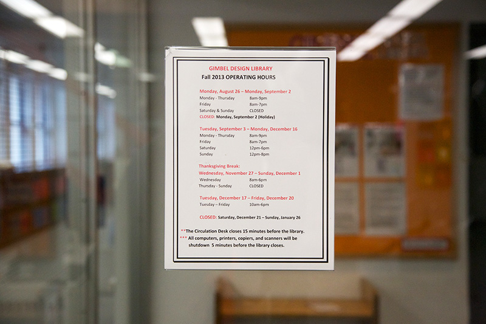
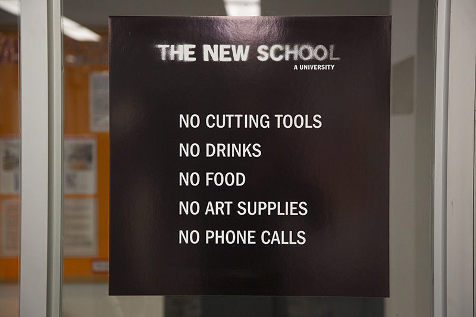
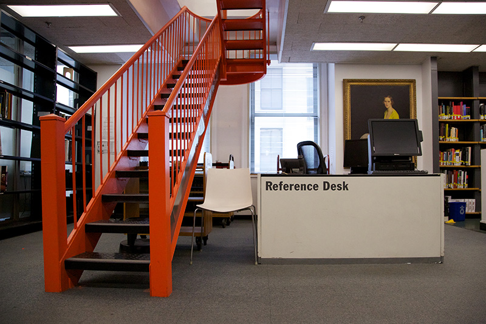

The entrance
has two security gates and is adjacent to the
circulation desk.
The
Gimbel Design Library's1
rules2

are posted on the window. The catalogue and additional resources can be accessed through the
research stations.
Books can be returned or checked out at the circulation desk or taken upstairs to the
quiet study area.
Additional research help can be requested at the
reference desk.

1
The Gimbel Design Library is open from 8-9pm Monday through Thursday, 8-7pm on Friday and 12-6pm on the weekends.
2
No cutting tools. No drinks. No food. No art supplies. No phone calls.